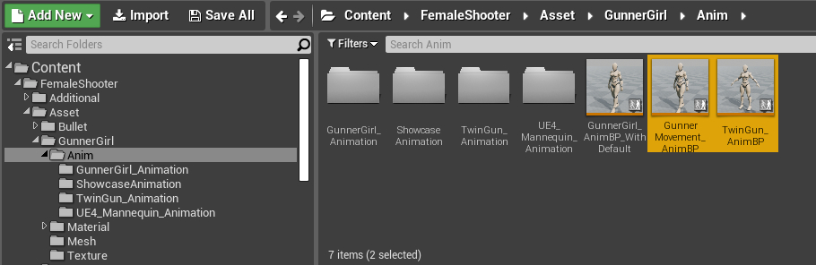

Migration Guide to 1.3.0
Overview
This article is intended for those who have previously used Female Shooter version 1.2.0 in their project.
There are several new features that was added to 1.3.0, most of them were added to implement the dual shooting/projectile mechanism to the template as well as to facilitate a more modular approach to the system as a whole.
If you're new to the package, you can try skipping the migration guide for now and move to template overview and guide on the next page.
Required Components
In Female Shooter 1.3.0, the functionalities are mostly separated into 2 components.
- GunnerGirlComponent, which handles most of the locomotion
- TwinGunHandler, which handles parts related to the shooting mechanism
CameraSwitcher also take a slightly larger role to handle the camera aspect of the character, specifically the aim function

To showcase how to use these components, please check inside the Content/FemaleShooter/Blueprint/Character folder.
You will find 2 Character Blueprints there,
- The GunnerGirl_Character, which serves as an example of how to use the full functionalities of the package,
- And the ThirdPersonModCharacter, which serves as an example on how to add only the dual gun shooting mechanism to your existing character.
You can check either one of these character blueprints to learn how to implement the FemaleShooter functionalities into a character.
For this guide, we will focus on the changes that have been implemented into the GunnerGirl_Character blueprint.
Open the blueprint file and head to the event graph, the changes from 1.2.0 to 1.3.0 will be listed in the sections below.
Gun Equip/Unequip Functions
In 1.2.0, the Gun Equip/Unequip functions was previously part of the GunnerGirlComponent.
There was some limitations before where the character will stop moving when equip/unequip functions are called.
In 1.3.0, they are now assigned to TwinGunHandler.
No limitations are present in the current version, character can equip/unequip their weapons while on the move.

Shooting Functions
Shooting now produces both a muzzle flash and a projectile that can affect the target that it hits.
The hand and arm animations of the character have also been adjusted to follow the direction of where the shot is directed.
In 1.3.0, the implementation of the functions was relocated from GunnerGirlComponent to TwinGunhandler.
The function names have also been updated,
Shoot ->StartShooting UnShoot ->StopShooting
Aim Mode
Aim Mode is currently available from the CameraSwitcher component.
To use this, you will first need to call
You can then use the following functions to activate/deactivate the AimMode

You will also need to call some setup functions before the game starts to ensure that TwinGunHandler and CameraSwitcher can communicate with each other.
An example setup can be found in the Event Graph of the GunnerGirl_Character.
Flashlight
Flashlight is available since 1.3.0.
It is used by adding the FlashlightComponent to an actor.
GunnerGirl_Character, RevolverGun, and Handgun each have a FlashlightComponent attached to them.
GunnerGirlComponent also comes with a set of functions that can be used to control the flashlights that is attached to the character and the guns.
Guide on how to use these functions can be found here.
Muzzle Flash Effect
Previously, in 1.2.0, Muzzle Flash effect was part of the GunnerGirlComponent.
It was customizable by going to the Details tab of GunnerGirlComponent and modifying the value of
In 1.3.0,
AmmoData can be customized by going to the Details tab of TwinGunhandler and changing the value of
For details on how to adjust the muzzle flash effect from AmmoData, see Ammo Data Setup.
Changing Equipments
In 1.2.0, there are 4 equipments that can be assigned to the character.
Left Gun Class Right Gun Class Left Holster Class Right Holster Class

In 1.3.0, this approach is not used anymore.
User can instead set any amount of equipment they need on the character by changing the

For details on how to do this, see Equipment Set Guide.
Custom Animations
Starting from version 1.2.0, you can substitute the default animations included in Female Shooter template with your own custom animations.
In 1.2.0, the animation variables used to implement custom animations are placed exclusively inside GunnerGirlComponent.
In 1.3.0, half of the animations was relocated.
The gun-related animations are now assigned to TwinGunHandler, while the locomotion parts still assigned to GunnerGirlComponent.
For more details on the new custom animation system, see the Custom Animations Guide.
Notify Events
There's also changes to the notification system used to communicate between the animations and the components.
In 1.2.0, AnimNotify is used to trigger actions from the animation, with additional code written inside the Animation Blueprint.
In 1.3.0, gun related animations uses TwinGunNotify, while locomotion related animations uses GunnerGirlNotify.
This is done to facilitate the sub-graph approach, minimize the amount of code that needs to be written on the Animation Blueprint, and to let the notification be sent directly to the components.
For the list of notify events used by the FemaleShooter template, see this article.
Animation Blueprints
In 1.3.0, two new Animation Blueprints was added.
- GunnerMovement_AnimBP, containing the animation control for the gunner girl's locomotion system
- TwinGun_AnimBP, containing the animation control for the shooting system

These animation blueprints can be used independently from each other.
Both of them are meant to be used using a sub-graph approach.
There are 2 examples given on how to use these new animation blueprints.
The example where TwinGun_AnimBP is used and blended with the default ThirdPerson_Character animation blueprint can be found in,
Content/FemaleShooter/Asset/GunnerGirl/Anim/UE4_Mannequin_Animation/ThirdPersonMod_AnimBP.
While example for the animation blueprint that was used for the Female Shooter demo can be found in,
Content/FemaleShooter/Asset/GunnerGirl/Anim/GunnerGirl_AnimBP.
For more details on how to use the animation blueprints, see the Setup Animation Guide.
Shooting Pattern
Starting from 1.3.0, you can adjust the Shooting Pattern of your character.
This will affect the timing as well as the gunhand that you use to shoot a projectile.

Details can be seen in Shooting Pattern Guide.
Multiplayer Replication (Not Supported)
Multiplayer replication is not supported as of version 1.3.0.
This is mostly due to difficulties in maintaining and testing the replications with several new features introduced into the package.
Next Steps
To learn further on how to implement the FemaleShooter 1.3.0 package into your project, see the next page.